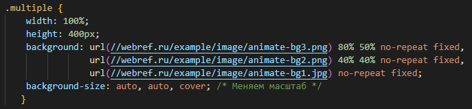
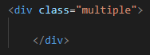
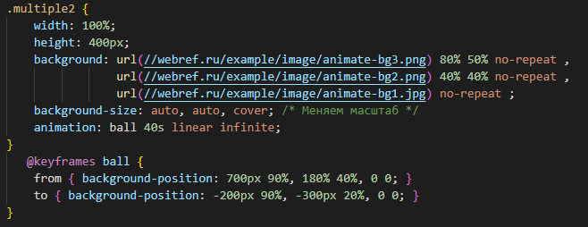
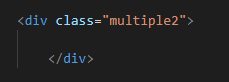

Несколько фоновых картинок
К одному элементу можно добавить сразу несколько фоновых изображений через единственное свойство background. Это позволяет обойтись одним элементом для создания сложного фона или одной картинкой, выводя её несколько раз с различными настройками.
Все изображения со своими параметрами перечисляются через запятую, при этом вначале указывается картинка которая выводится поверх остальных изображений, а последней, соответственно, самая нижняя картинка.
Если требуется отдельно задать какое-то стилевое свойство для фона, вроде background-size, то параметры для каждого фона перечисляются через запятую.
Создание фона с тремя изображениями
 
.
Отдельные изображения для фона позволяют менять их положение, а также анимировать
 
Одна картинка для создания блока с рамкой
Рассмотрим теперь как применять одну картинку для создания блока с рамкой.
Ширина блока фиксированная, а высота тянется в зависимости от объёма содержимого блока.

На рисунке хорошо заметна верхняя и нижняя часть, которую требуется вырезать в графическом редакторе и расположить по горизонтали.
Средняя часть выбирается таким образом, чтобы она повторялась без швов по вертикали. Картинка имеет выраженный повторяющийся орнамент, так что трудностей с выделением быть не должно.
В итоге получится такое подготовленное изображение. Клетчатое поле обозначает прозрачность, оно позволяет задавать наряду с изображениями цветной фон и легко менять его через стили.

Сам фон выводится свойством background, оно же задаёт и координаты нужного фрагмента. Параметры каждого фона перечисляются через запятую и в данном случае имеет значение их порядок.
Нам требуется, чтобы верхняя и нижняя часть блока не перекрывались, поэтому ставим их первыми. Цвет фона указывается последним.
Первый фон выводит верхнюю границу блока, второй фон — нижнюю, а третий вертикальные границы. Последним идёт цвет, который виден в прозрачной центральной части блока.


Уицилопочтли — «колдун колибри», бог войны и солнца.
Тескатлипока — «дымящееся зеркало», главный бог ацтеков.
Обоим богам приносили человеческие жертвы.